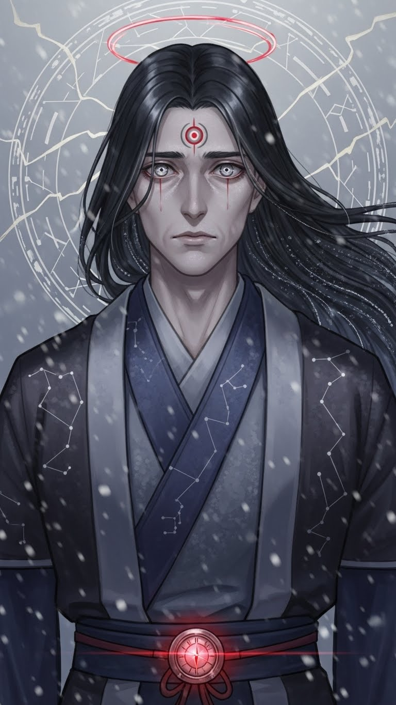

Welcome to Reika
In this quiet, mystical town where the river chooses its own path and the moon lingers a touch too long, tune in for nightly announcements, eldritch weather reports, community warnings, deity sightings, and gentle reminders that reality is... flexible.
December 1, 2025 • 5:00
Episodes
December 1, 2025 • 5:00
Tonight’s broadcast brings unusual movement in the cemetery…
November 30, 2025 • 3:42
In our debut broadcast, the Host welcomes listeners to Reika…
About the Host
Setsumi No Kami (pronounced set-soo-me) serves as the ethereal voice guiding you through the veils of Reika. With a gaze that pierces the mist and words that echo like distant chimes, Setsumi delivers the broadcasts with unwavering poise.
Daily transmissions (weather and cosmic anomalies permitting) bring you the latest from our ever-watchful moon and the river's capricious moods.
Sponsors
The veils are thin and so is the budget. Inquire within.
Live Events
Coming when the moon aligns (TBD).
Contact
Report omens or misplaced skeletons: